Members and Visitors Safety Briefing
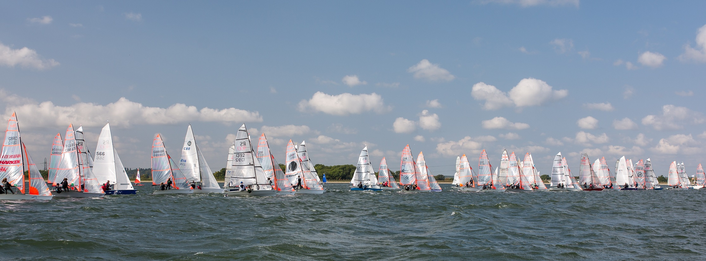
Safety Briefing and important information
Welcome to Queen Mary, please read this important information before heading out on the water. There are a few items to cover and below you will find maps and diagrams to help. Most importantly... please ask! Our team are always on hand to help.
Before you head out on the water for the first time at QMSC, please do come and speak to the Duty Officer - we are keen to facilitate your enjoyment of your time on the water.
Let's start with some of the basics:
- No dogs are allowed on site, with the exception of assistance dogs
- Bar and catering are available on the upper deck at weekends and on Wednesdays, evening supper can be booked
- On the pontoons and banks of the reservoir you must wear a Buoyancy Aid
- Area of the Club's grounds - please don't go through any gates on the upper level or walk round the banks
- The Fire Muster point is near the top of the steps from the carpark, should the alarms sound whilst you are at the club - all are expected to make their way there if on land at the time of any alarm sounding
- The First Aid Point is at the office on the upper deck - Please ask for immediate assistance if needed. - We also have a Cardiac Defibrillator located outside the office
- The 'Daily Information Board' is located outside the office on the upper deck - please check before going afloat.
- Once you have dropped off your kit - Please park vehicles on the lower level; this applies to windsurfers, foilers and dinghy sailors.
- Rigging areas - Please secure your kit at all times with the tiedowns provided.
- Disabled Parking Bays - please use these if you are a Blue Badge Holder only
- Foil Drive Assist is not to be used at QMSC. Powered craft are only permitted on the reservoir for the purposes of safety, and the propellor presents a risk to other water users.
- We are pro-actively learning about Parawinging as this new sport finds its feet. Currently, this is only permitted under trial tuition with our partner Simon Winkley Marine (with direct safety cover) and we will look to update our policy in due course.
In addition if you see a Near miss or a Hazards please let us know, near-misses are a subset of incidents where no one got hurt, by reporting we will keep improving... click here to report
Location of Facilities
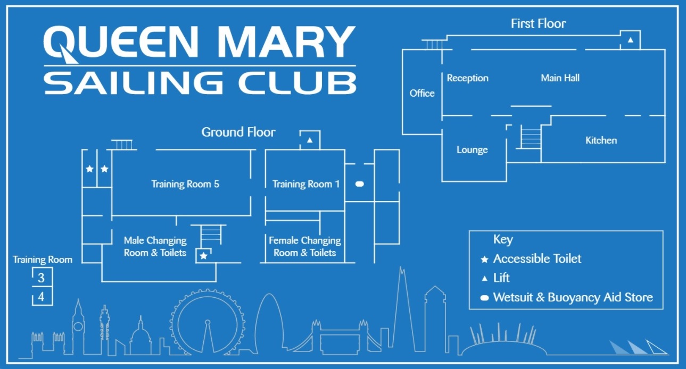
Heading out on the water
- Please take care walking up and down the banks, especially when carrying kit.
- Be realistic about your own experience and capabilities – it is better to play it safe than to over-estimate your skills. Our staff may seek information from you about your sailing or windsurfing experience, which is for your safety.
- Mast head floats are available if you wish to borrow, our mast head float policy can be found here
- Look after your equipment, follow instructions for safe launching and landing, watch and anticipate other users avoiding collisions, or damage wherever possible.
- Observe the on water hazards and operations by BRETT aggregate. BRETT operate the dredger and run barges extracting aggregate at their plant on the West side, please keep clear of the BRETT barges.
- Entry and exit to the water for windsurf/wingfoil should be made through the mats where possible
- Mats should be set to allow some secure footing in the water – if not please contact the office to get these adjusted
- Safety tips for Wingfoiling
- Guide to Launching and Recovery at QMSC
Further details of 'Club Byelaws' and 'Safety Policy' can be found here
- QM Flag - the water is only open when the Club Flag is flying and the Duty Officer has launched a safety boat; if you arrive early, please wait to go out on the water until the flag is flying - speak to the Office if you're not sure
- Red flag – Up when it's windy, this is a warning to be realistic about your own experience and capabilities. The Duty Officer may restrict on-water activities and Club boats or boards launching in high winds
- Lightning - We are watching for lightning and if it's too close the Duty Officer will clear the water immediately. We alert water users when it's safe to return to the water
- Hoist (One on east and one on west side) or Winches (3x on west side) - If you wish to use the boat hoist, for catamarans and keelboats, or the winches for dinghies please ask for assistance. Please keep clear when the hoist or winches are in use.
- Rescue cover – Cover only when the club flag is flying, if its not obvious that you need assistance please wave your arms.
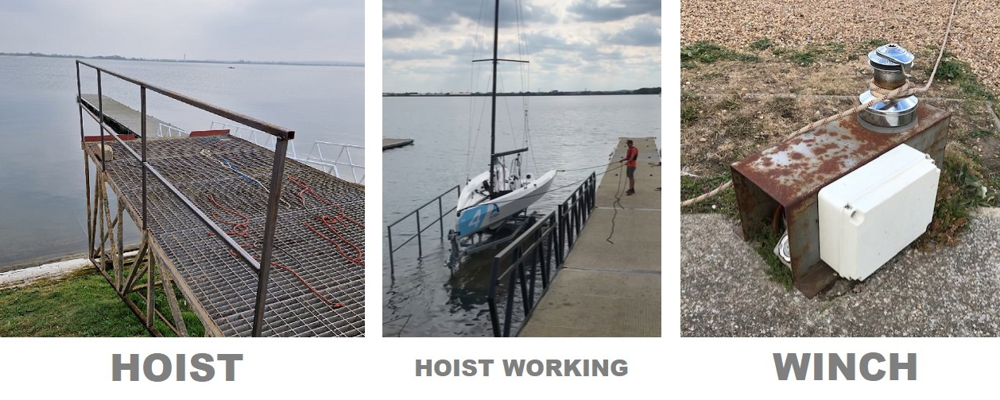
Sailing, Windsurfing and Wing-foiling at QM
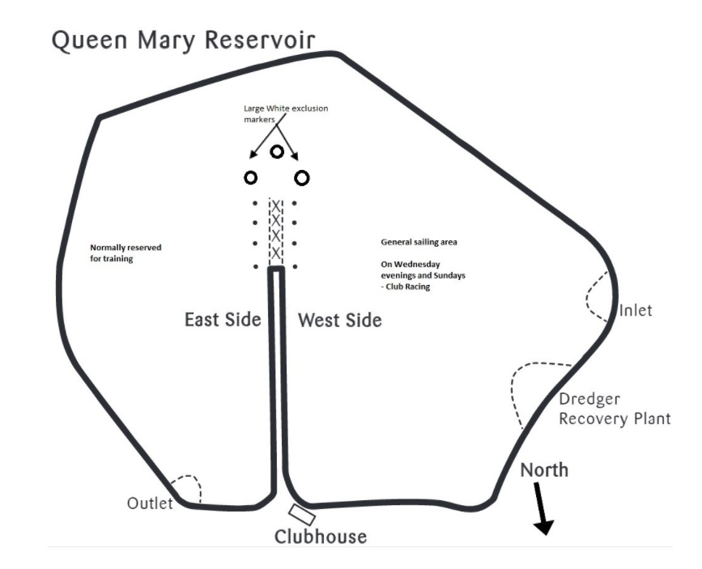
- Our Sailing Area is normally on the West Side, but do check the 'Daily Information Board' for any special arrangements.
- Training and other events typically take place on the East Side, which is not normally open for general sailing, unless otherwise indicated on the board.
- On Wednesday evenings and Sunday mornings, Club Racing takes place. Be aware that racers will be sailing round racing marks with flags on. Out of courtesy, please keep clear of their path. Please keep clear of the racing marks when general sailing, these are orange, pink and white buoys with a 2-meter flagpole.
- Please be aware that boats with spinnakers can find it tricky to see wing-foilers or some other craft; shout to let them know you're there and do follow the 'rules of the road' when sailing/windsurfing or foiling
- The map above shows exclusion zones which are there for your safety and to protect equipment. Please stay out of these areas, as there are hazards which may not be obvious from above the waterline. Exclusion zones are marked by yellow buoys and care should be taken when sailing in close proximity to these areas
- When water levels are low we may define some areas of particularly shallow water - if this is the case they are also indicated on the daily information board and marked on water by buoys.
- Other hazards: Keep a lookout for moorings, floating debris, drifting fenders, buoys, warps, driftwood and fish. These can be hazards, especially for those foiling, because sometimes driftwood or fish are just below the surface.
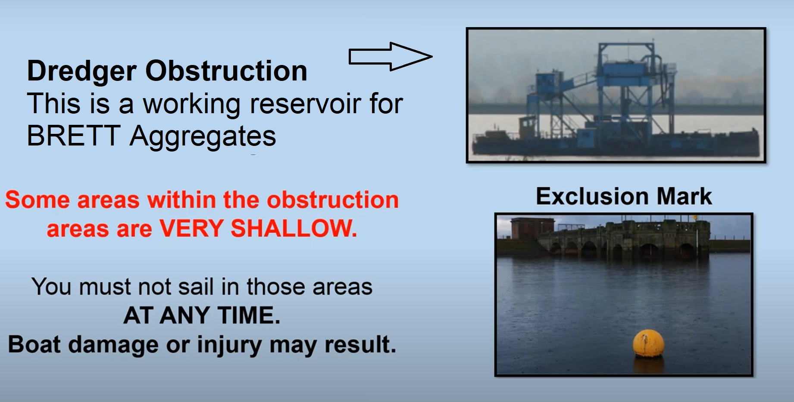
NEW MAY 2024:
You will see two large white buoys laid near the West Side pontoons. This area is often tightly congested and presents an elevated risk of collision between sail and powered craft, as powerboats leave and return to the pontoons. It is imperative that powerboats have easy access in and out of this area to manage rescues and the safety of water users at the club. The purpose of these buoys is to create a 'box' between the two buoys and the ends of the two longer pontoons. When sailing, paddling, windsurfing or winging, please do not pass in front of powerboats driving in this box, to allow them a clear route out to the rest of the reservoir.
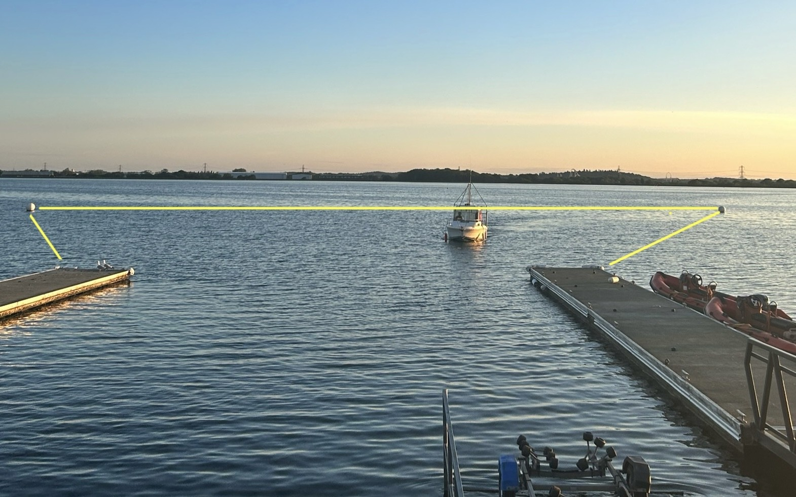
Marine Awareness
There are many different types of craft using the water each with its own style of sailing and manoeuvrability - marine awareness is important. Some craft that are fast and can be difficult to manoeuvre, its best to give everyone plenty of room.
- Foiling boats and windsurfers - fast and quiet.
- Trapezing boats and Catamarans - fast and difficult to manoeuvre give plenty of room
- Keelboats - faster than you think
- Wingfoilers fall off and have a large splash area – foil and wing go in opposite directions. Most wings do not have a window for the foiler to see through. Please be aware of this blind spot when approaching a winger. Wingers must also be extra vigilant for other water users in light of this blind spot.
- Racing - be aware of club launching area and racing on water at peak race time.
- Stand Up Paddle-boarding - SUPs are slow
- Powerboats - will generally keep clear from you but please help them by holding your course and speed unless you need to avoid a collision. Powerboats may need to travel at speed to attend a rescue. Please do not pass in front of a powerboat whilst sailing within the 'box', between the long pontoons and the two large white buoys on the west side.
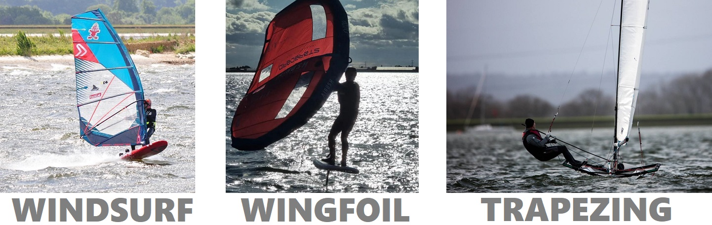
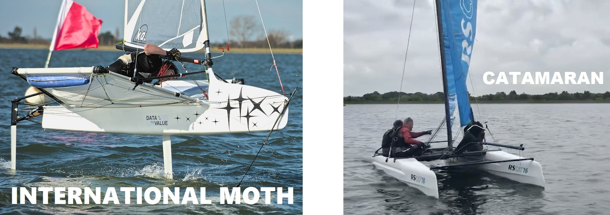
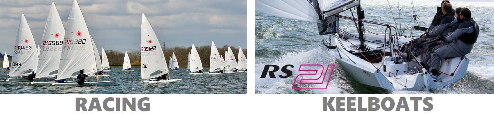
Stand Up Paddle boarding
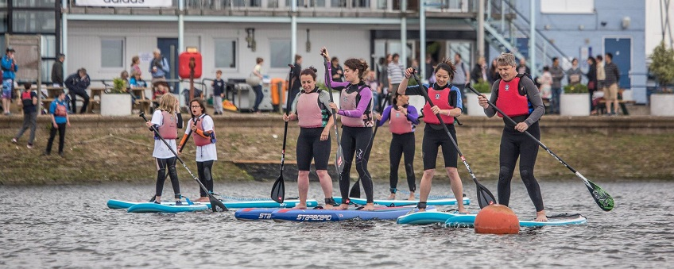
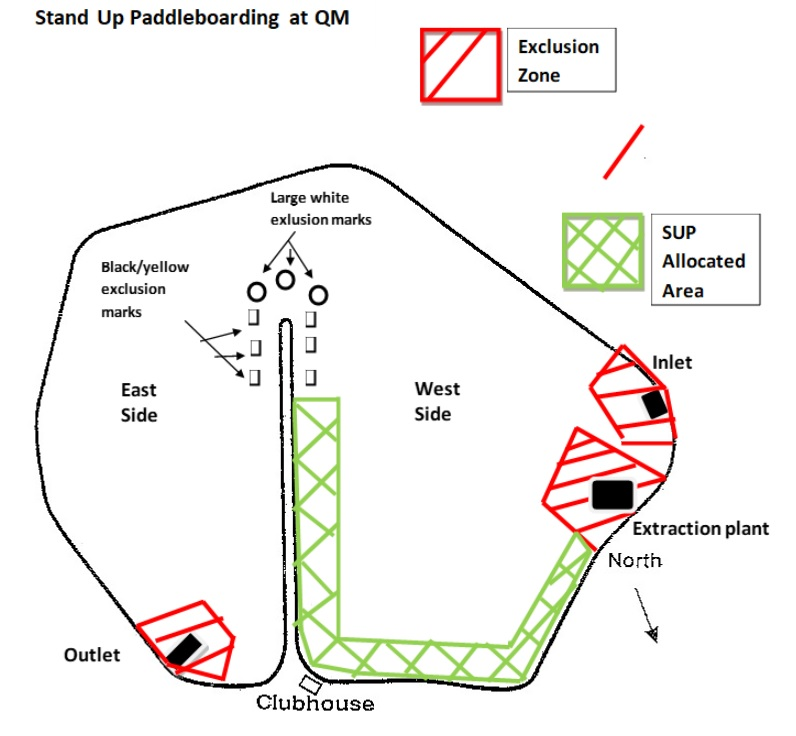
- SUPing is permitted in light winds, please contact the club to check on the day.
- The standard SUP area is within 25 metres of the bank from the top of the bund round to the extraction plant located on the West of the reservoir.
- An alternative paddling area may be allocated on the 'Daily Information Board'
- Please note the paddling area can change day to day and must be adhered to at all times.